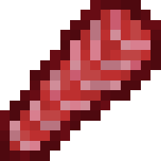
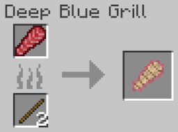
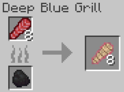
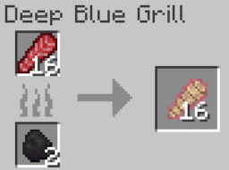
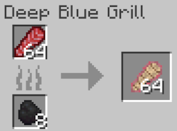
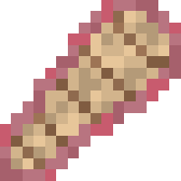
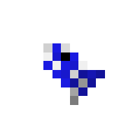

Tuna
The tuna is a passive saltwater fish that spawns in all oceans except for frozen (deep and regular) and warm oceans. It is
a great source of food and can be raised by the player from larva to a mature adult. It is meant to be a farmable mob,
similar to how they are farmable in real life. It is largely based on the atlantic bluefin tuna.
Spawning
Tuna are uncommon mobs that spawn in schools of 4 in all nearly oceans, except for warm oceans and frozen oceans. The way tunas spawn naturally is by replacing some naturally spawning aquatic mob. In the case for all the oceans it spawns in each cod has a chance to be replaced with a school of tuna. The table below shows the spawn rates of the tuna in the biomes they spawn in.
| Biome | Spawn Chance (Replacement Chance) | Group Size |
|---|---|---|
| Ocean/Deep Ocean | 4% (Cod) | 4 |
| Cold Ocean/Deep Cold Ocean | 4% (Cod) | 4 |
| Lukewarm Ocean / Deep Lukewarm Ocean | 4% (Cod) | 4 |
Items
Item drop chances
Tuna have 2 pools in their loot tables. The first pool only contains tuna fillets, which is guaranteed to drop in a group of 2 to 4 fillets. The second pool contains tuna larva (item) and bonemeal, and these items can only be dropped if the tuna is killed by a player. Below shows a table with the item drop chances:
| Item | Chance (if killed by player) | Chance (if not killed by player) | Count |
|---|---|---|---|
| Tuna Fillet | 100% | 100% | 2 - 4 |
| Bone meal | 83.33% | 0% | 0 - 1 |
| Tuna Larva (item) | 16.67% | 0% | 1 - 3 |
Tuna Fillet

Tuna fillet is an item that is dropped by tuna, juvenile tuna and orcas, stackable up to 64 in one item slot. It has a 100% chance to be dropped by tuna, a 16.67% chance by orcas, and 100% chance by juvenile tuna upon death. Below are the food stats of the tuna fillet:
- Nutrition: 3
- Saturation: 2
Cooking
The tuna fillet can only be cooked using the Deep Blue Grill. Like every other mob food item in Blue Depths, you can only cook the fillet as 1, 8, 16, or 64 using either sticks (only if you want to cook one), coal, or charcoal as fuel. Below are images showing how to cook the various counts of tuna fillets:




Tuna Steak

Tuna steak can be obtained when a player cooks Tuna Fillet in the Deep Blue Grill. It is used as new source of food for the player, stackable up to 64 in one item slot. Below are the food stats of the tuna steak:
- Nutrition: 8
- Saturation: 13
Behavior
Tuna are passive mobs, meaning they do not attack the player. They are ambient fish that swim around midwater in the various ocean biomes they inhabit. Because of their size they can't be transported via water buckets. Instead, the player must kill tuna and hope they drop tuna larva (item) and use that item to raise tuna to adulthood More information about doing this is found in the next section.
Life Cycles and Raising Tuna
Tuna Larva
Tuna Larva (Item)

In order for the player to be able to raise tuna as either a farmable fish or as a pet, they cannot use a water bucket because of the size of the tuna. Instead, the player must kill an adult tuna for a chance to get an item called tuna larva. The player can then use that larva to spawn a tuna larva mob and either wait for it to grow or feed it to accelerate growth. All the player has to do is simply place the tuna larva item down on the ground, preferably in some body of water, or else the tuna larva mob will start flopping around an potentially die.
Tuna Larva (mob)
Tuna larva are the first phase of a tuna's lifecycle. Like with every other baby/juvenile variants of the Blue Depths mobs, they do not spawn naturally, they can only exist if a player (or blocks like dispensers or droppers) places a Tuna Larva Item. These tuna larva fish have the potential to grow up and become a Juvenile Tuna, the next phase in the life cycle of a tuna. Physically, they are small fish with a color mix of blue and gray. They will never despawn.
For a tuna larva to grow up to become a Juvenile Tuna, the player has two options. The player can either wait a certain amount of time for the larva to grow all by itself, or they can feed it wheat seeds to speed up the growth process, by taking a certain amount of time out of the remaining time left to grow. Unlike with vanilla mobs, Blue Depth mobs will not eat if you "use" an item on them, instead you must throw/drop the item close to them. The total time it takes for a larva to become a juvenile is 13.33 minutes without player intervention.
If the player wishes to stunt the growth of the larva, meaning they want to prevent the larva from ever growing, all the player has to do is drop beetroot near the larva. This effect is irreversible.
Below shows a table on how each method accelerates the growth of the larva:
| Method | Growth Progress | Amount Required for Near-Instant Growth |
|---|---|---|
| Natural Growth (Doing nothing) | Growth progresses normally | Not applicable |
| Wheat seeds | Removes 80 seconds from remaining time | 10 seeds |
| Beetroot | Stops growth (irreversible) | Not applicable |
Tuna Larva do not drop anything upon death.
Juvenile Tuna
Juvenile tuna is the second phase in a tuna's lifecycle. Like the Tuna Larva, juvenile tuna do not spawn naturally, they can only be obtained when a tuna larva grows up. Juvenile tuna looks just like adult tuna, except they appear smaller. They can drop items upon death, but not nearly as much as adult tunas can. These fish have to potential to grow into mature tuna by simply waiting or giving it food to accelerate its growth. Juvenile tuna do not despawn like wild adult tuna do.
For a juvenile tuna to grow up to become an adult, the player has two options. The player can either wait a certain amount of time for the juvenile to grow all by itself, or they can feed it tropical fish to speed up the growth process, by taking a certain amount of time out of the remaining time left to grow. Unlike with vanilla mobs, Blue Depth mobs will not eat if you "use" an item on them, instead you must throw/drop the item close to them. The total time it takes for it to grow is 13.33 minutes without player intervention.
If the player wishes to stunt the growth of the juvenile tuna, meaning they want to prevent the juvenile from ever growing, all the player has to do is drop beetroot near the juvenile. This effect is irreversible.
Below shows a table on how each method accelerates the growth of the juvenile:
| Method | Growth Progress | Amount Required for Near-Instant Growth |
|---|---|---|
| Natural Growth (Doing nothing) | Growth progresses normally | Not applicable |
| Tropical Fish | Removes 80 seconds from remaining time | 10 tropical fish |
| Beetroot | Stops growth (irreversible) | Not applicable |
Juvenile tuna can drop 2 items, bone meal or tuna fillet. Upon death, it is guaranteed to drop 1 tuna fillet, only if a player kills it. Similarly, it will only drop 1-2 bone meal (equal chance for both) if the player kills it. Below is a table that shows the item drop chances.
| Item | Chance (If killed by player) | Count |
|---|---|---|
| Tuna Fillet | 100% | 1 |
| Bone meal | 100% | 1 - 2 |
History
Development History
| Datapack Version | Addition/Change |
|---|---|
| 1.0.0 (Initial Release) |
|